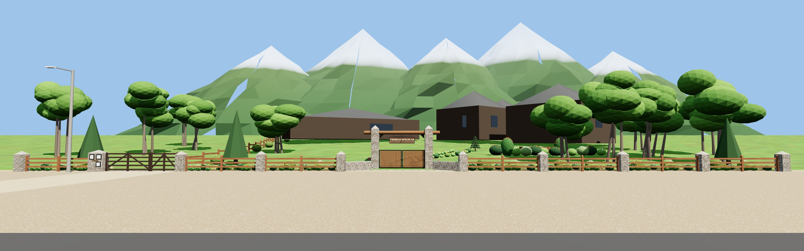
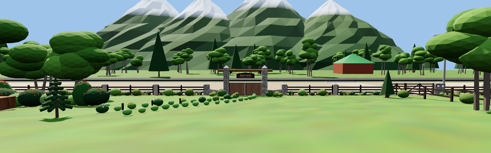
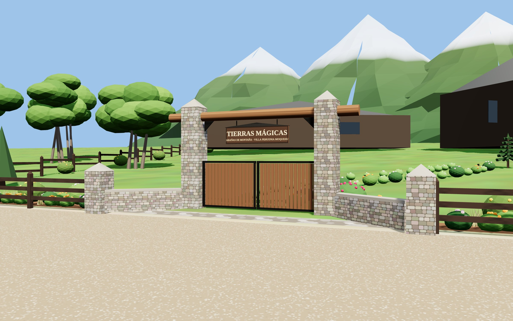
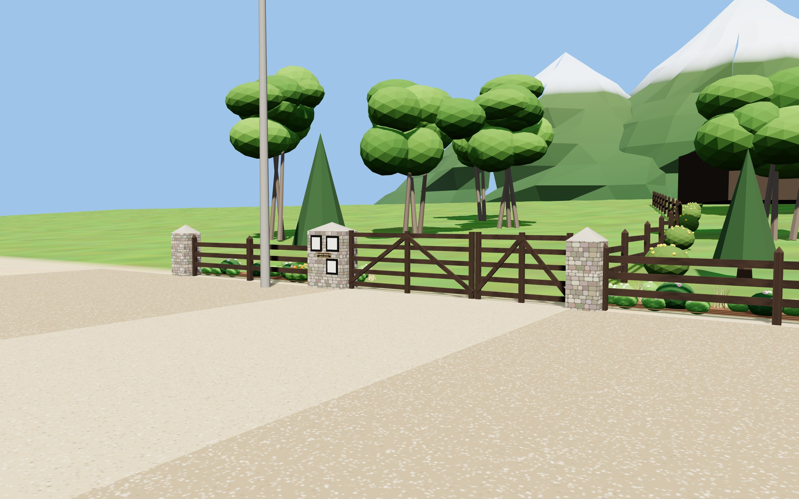
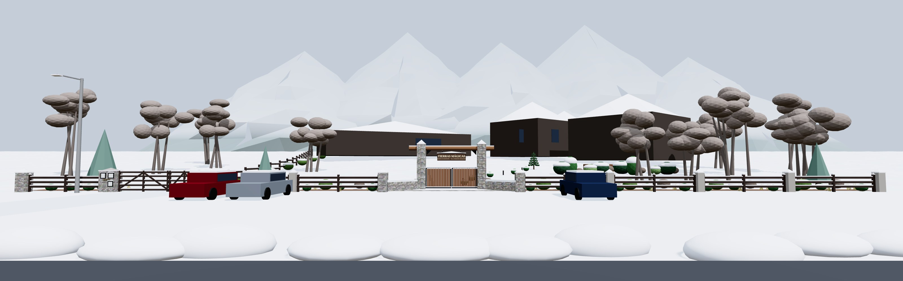
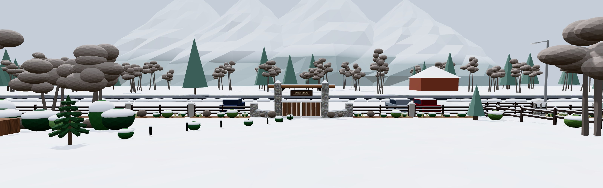
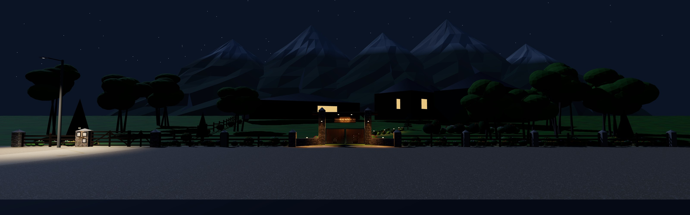
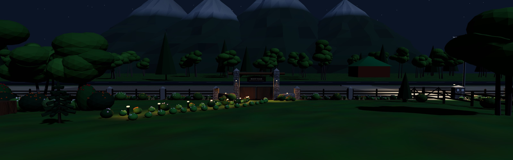
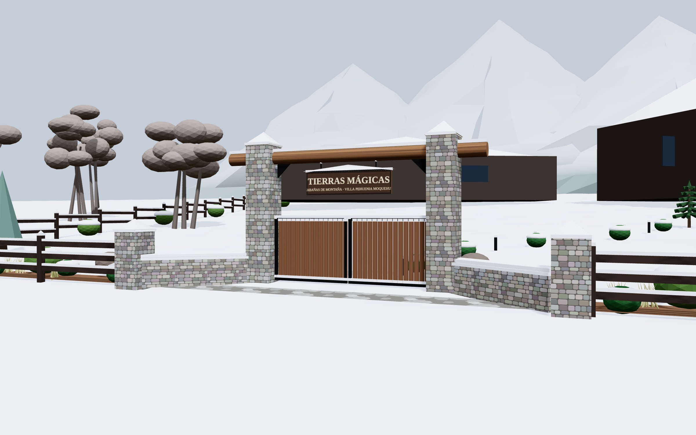
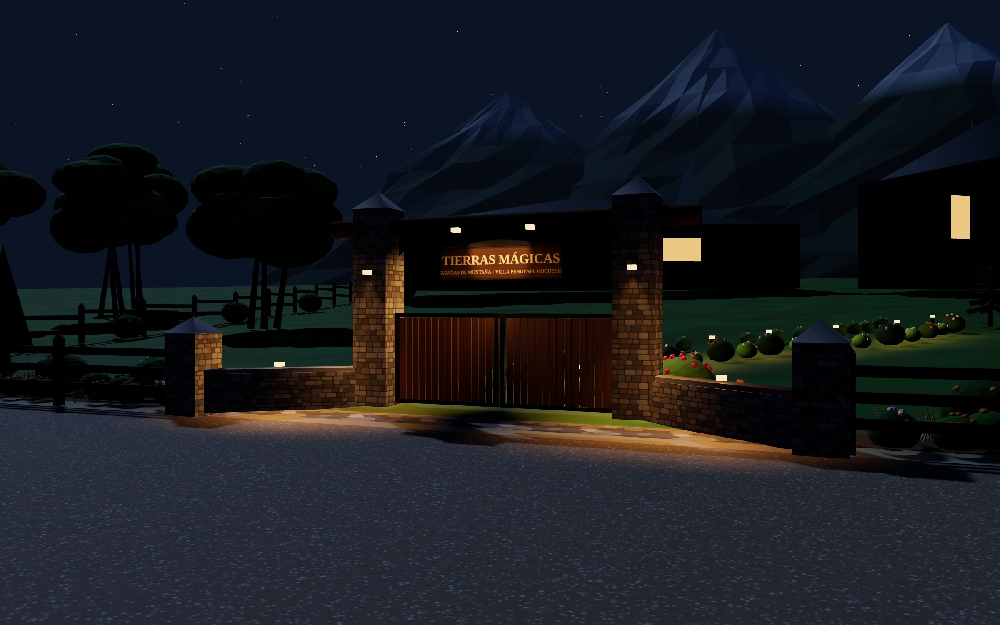

Opción 3 «Refugio de piedra» con la tabla tallada y el paisajismo nativo propuesto, en verano, en invierno con nieve y de noche. El modelo 3D se armó con las medidas del proyecto ejecutivo: 9 mojones cada 6 m, portal de 3,80 m retirado 1,50 m con pircas, pilar de medidores revestido, tranquera de 5,50 m, cerca oscura de 3 travesaños y las 211 plantas ubicadas según los módulos y las zonas.

Desde la ruta. Todo el frente de punta a punta, visto desde la banquina de enfrente. A la izquierda, el acceso vehicular con el pilar de medidores en piedra y la luminaria pública. En el centro, el portal con la tabla «Tierras Mágicas». La faja nativa va del lado de adentro de la cerca y la banquina queda libre.

Desde el interior del complejo. El portal visto desde la loma, con «Buen viaje» en la cara interior de la tabla, el sendero con balizas solares y la araucaria al final. A la izquierda, la pantalla vegetal de la tina. A la derecha, la tranquera y el cerco del camino interno.

Portal peatonal. Pilares y pircas en piedra, viga nueva con ménsulas negras, portón de metal y madera y atrio de lajas.

Acceso vehicular. Pilar de medidores revestido con las cajas enmarcadas y la placa, tranquera restaurada y mojones M0 y M1 en piedra.
Invierno con nieve

Desde la ruta, en invierno. La piedra, la cerca oscura y la tabla siguen marcando el acceso sobre la nieve; los remates en punta y los travesaños sostienen solo una capa fina. La banquina se usa para estacionar y la máquina vial acopia la nieve contra la cuneta, lejos de la cerca.

Desde el interior, en invierno. Los ñires sin hoja, el sendero despejado con las balizas y las matas persistentes (chaura, calafate, michay) asomando con nieve. El amancay y la frutilla quedan bajo la nieve hasta la primavera.
Noche con las luces solares

Desde la ruta, de noche. El portal es el único punto iluminado del frente: la tabla con los 2 proyectores, los pilares con luz hacia abajo y las pircas con luz baja. El acceso vehicular queda iluminado por la luminaria pública existente. Ninguna luz apunta al cielo.

Desde el interior, de noche. Las 8 balizas marcan el sendero hasta el portal. La cara interior de la tabla («Buen viaje») queda en penumbra porque los proyectores apuntan hacia la ruta; si se quiere leer de noche, se suma un proyector del lado de adentro.

Portal en invierno.

Portal de noche. Luz cálida de 2700-3000 K sobre la piedra y la madera.
Son renders 3D volumétricos de estudio, no fotorrealistas. Las proporciones, ubicaciones y materiales son los del proyecto; las texturas, los árboles existentes, los edificios del complejo y las montañas están simplificados y en ubicaciones aproximadas. Las plantas se muestran con el tamaño que tendrán a los 2 o 3 años de plantadas. La luz nocturna es una aproximación: la intensidad real depende de los equipos que se compren.